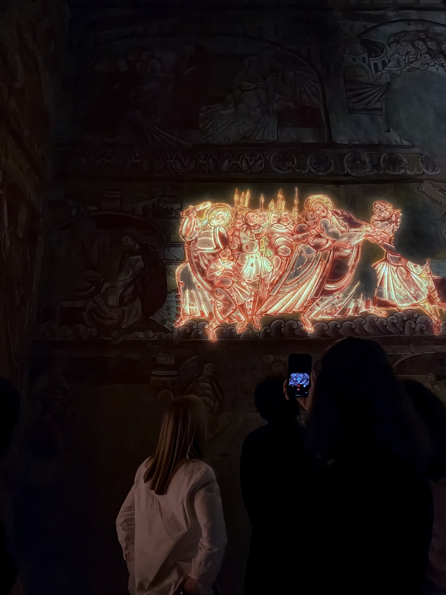

Selected work / Four chapters01 / 04
Inspace.
Heritage × Technology / Paris / 2024
Saint-Martin de Vic
A monument becomes an interface.
- Role
- 3D exhibition design
- Format
- Permanent museum installation
- Method
- Photogrammetry / video mapping
- Venue
- Cité de l’Architecture, Paris
